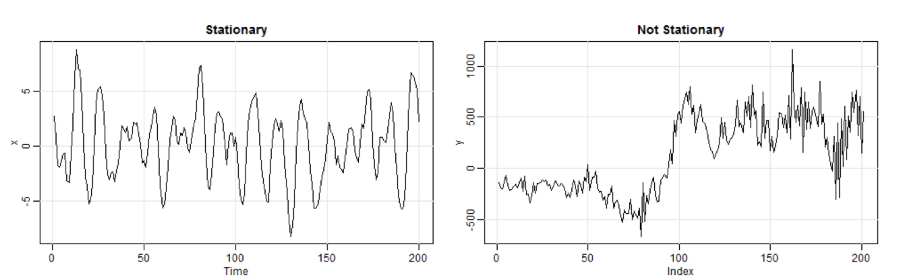
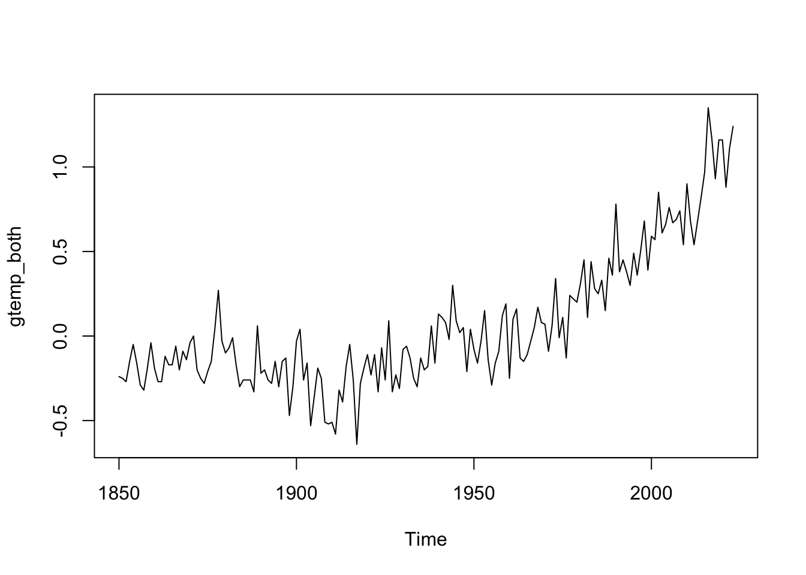
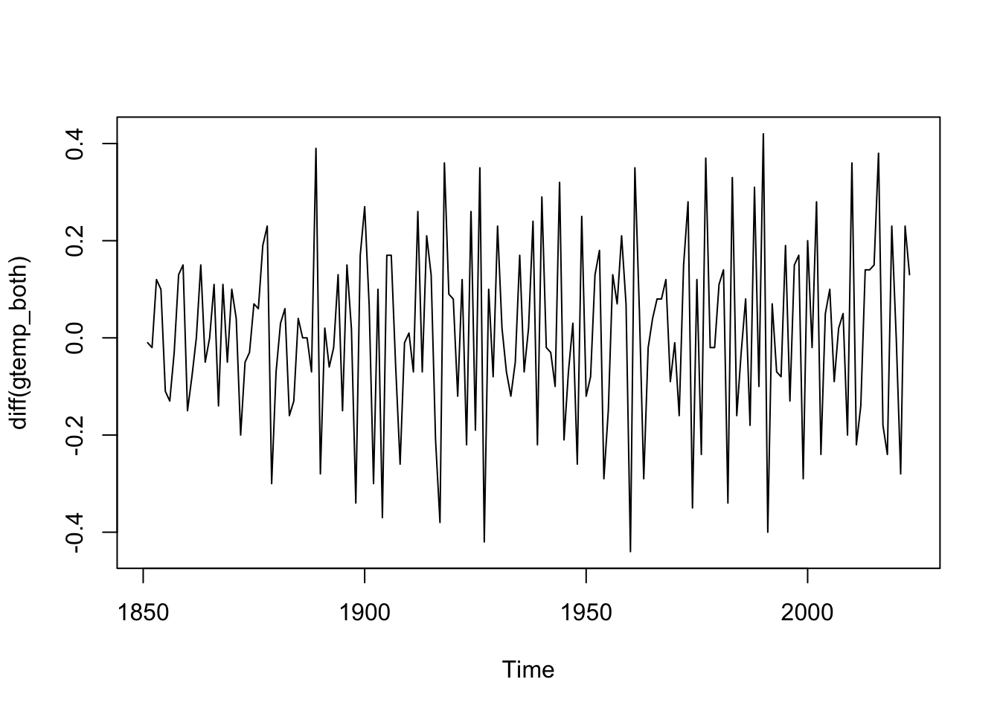
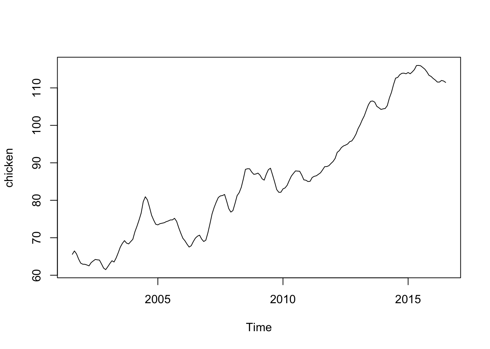
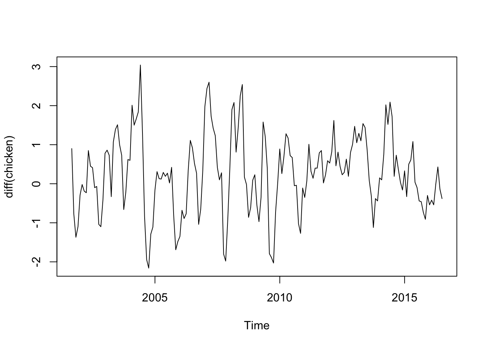

Budeme používať rôzne typy údajov. V tomto cvičení vykreslíme časové rady údajov a je užitočné zamyslieť sa nad tým, ako sa tieto časové rady dajú porovnať. Zamerajte sa najmä na typ trendu, sezónnosť alebo periodicitu a homoskedasticitu.
Najprv načítame knižnice datasets, astsa and xts pomocou príkazu libarary(). Pred prvým použitím súboru údajov by ste mali použiť funkciu help(), aby ste si pozreli podrobnosti o údajoch. Ak si chcete pozrieť podrobnosti radu, použite napríklad help(JohnsonJohnson) alebo ?JohnsonJohnson.
library(datasets)library(astsa)library(xts)
Loading required package: zoo
Attaching package: 'zoo'
The following objects are masked from 'package:base':
as.Date, as.Date.numeric
# Náhlad na dáta Southern Oscillation Index# Nájdete to v knižnici astsahelp(soi)# Náhlad na dáta chicken sú mesačné ceny poundu kuraťa# Nájdete to v knižnici astsahelp(chicken)# Náhlad na dáta zárobkov na akciu Johnson & Johnson # Nájdete to v knižnici datasetshelp(JohnsonJohnson)# Náhlad na dáta priemernej odchýlky globálnej teploty medzi súšou a oceánom# Nájdete to v knižnici astsahelp(gtemp_both)
4.2 Stacionarita časového radu
Prejdime k základným pojmom stacionarity, jej významu a k tomu, ako prinútiť nestacionárne údaje k stacionarite.
Na dosiahnutie úspornosti v modeli časových radov sa často predpokladá určitá forma invariantnosti rozdelenia v čase alebo stacionarity. Pre pozorovaný časový rad: Výkyvy sa javia ako náhodné. Ten istý typ náhodného správania však často platí aj medzi jednotlivými časovými obdobiami. Napríklad výnosy z akcií alebo zmeny úrokových sadzieb majú v každom z nich veľmi odlišné správanie v porovnaní s predchádzajúcim rokom. Ich priemer, štandardná odchýlka a ďalšie štatistické vlastnosti sú však často podobné v jednotlivých rokoch.
Proces (časový rad Y) je slabo stacionárny, ak sa jeho stredná hodnota, rozptyl a kovariancia časovými posunmi nemenia. To znamená, že existuje spoločná konštantná stredná hodnota mu \(\mu\) a rozptyl sigma-kvadrát \(\sigma^2\) pre všetky časy t.
Kovariancia medzi dátami Y v čase t a v čase s závisí len od toho, ako blízko sú časy t a s, nie od samotných časových indexov t a s. Napríklad, ak je Y stacionárny proces, potom kovariancia medzi dátami Y v časoch 2 a 5 je rovnaká ako kovariancia medzi časmi 7 a 10, pretože oba sú od seba vzdialené tri časové jednotky.
Prečo sa zamerať na stacionárne modely? Stacionárny proces možno modelovať s oveľa menším počtom parametrov. Pre každý \(Y_t\) nepotrebujete inú strednú hodnotu, ale všetky majú spoločnú strednú hodnotu \(\mu\), ktorú môžete presne odhadnúť pomocou \(\bar{y}\), výberového priemeru.
Keď sa pozoruje časový rad, prirodzená otázka znie: Je stacionárny? Konkrétne, je pre tento časový rad údajov vhodný model stacionárneho procesu? Mnohé finančné časové rady nevykazujú stacionaritu. Avšak: Zmeny v rade sú často približne stacionárne. Možno po použití logaritmickej transformácie. Stacionárny rad by mal vykazovať náhodné oscilácie okolo určitej pevnej úrovne, čo je jav nazývaný mean-reversion (návrat k strednej hodnote).
V kontexte časových radov sa stacionárnosť vzťahuje na stabilitu strednej hodnoty - to znamená, že neexistuje stabilita trendu korelácie - to znamená, že korelačná štruktúra údajov zostáva v čase konštantná. Časové rady, ktoré sú tu vykreslené, môžu pomôcť lepšie pochopiť stacionaritu.  Ľavý graf je stacionárny, neexistuje v ňom žiadny trend a časový rad sa správa rovnako napríklad medzi časovými bodmi 1 až 50, 50 až 100 atď. Na druhej strane graf vpravo vyzerá veľmi odlišne medzi časovými bodmi 1 až 50 a 150 až 200. Stredné hodnoty v týchto časových intervaloch sú odlišné, rovnako ako variabilita koniec radu je variabilnejší ako začiatok.
Stacionarita znamená, že na odhad korelácie môžeme použiť jednoduché priemerovanie: Ak je stredná hodnota konštantná, potom ju môžeme odhadnúť pomocou priemeru vzorky, \(\bar{x}\), a ak je korelačná štruktúra konštantná, potom napríklad na odhad korelácie s oneskorením 1 môžeme použiť všetky dvojice údajov, ktoré sú od seba vzdialené 1 časovú jednotku, \((x_1, x_2), (x_2, x_3)\) atď. Funguje to, pretože vzťah medzi susediacimi hodnotami radov zostáva v čase rovnaký. Podobne môžeme na odhad korelácie s oneskorením 2 použiť \((x_1, x_3), (x_2, x_4)\) atď.
Southern Oscillation Index (SOI, https://www.ncei.noaa.gov/access/monitoring/enso/soi) je pomerne stabilný. vyzerá rovnako v každom malom časovom úseku (aj keď môže existovať určitý mierny trend).
Rozptylové grafy ukazujú koreláciu z hľadiska oneskorenia. Nazýva sa to autokorelácia a je to rovnaké ako korelácia, o ktorej ste sa učili v regresii. Graf ukazuje, že SOI, ktorý je náhradou teploty povrchu mora, je pozitívne korelovaný sám so sebou s odstupom jedného mesiaca, ale negatívne korelovaný sám so sebou s odstupom šiestich mesiacov (keďže v lete je horúco a v zime chladno).
help(gtemp_both)plot(gtemp_both)

Globálne priemerné teplotné odchýlky medzi súšou a oceánom sú príkladom náhodnej prechádzky, kde hodnota radu v čase t je hodnota, ktorú mal v čase t-1, plus úplne náhodný pohyb.
plot(diff(gtemp_both))

Diferencovaním (“dnes mínus včera”) sa tento druh procesu môže stať stacionárnym.
plot(chicken)

plot(diff(chicken))

Cena kurčaťa je skôr “trendová stacionarita”, čo je stacionárne správanie okolo jednoduchého trendu. Diferencovanie funguje aj tu.
plot(JohnsonJohnson)
plot(log(JohnsonJohnson))
plot(diff(log(JohnsonJohnson)))
Ak existuje trend a heteroskedasticita, môže pomôcť logaritnmická transformácia a diferencovanie, ako v prípade súboru údajov o štvročných zárobkoch na akciu Johnson a Johnson za obdobie od 1960 až 1980. Po prvé, logaritnmická transformácia údajov s kladnou hodnotou môže stabilizovať rozptyl. Po druhé, diferencovanie údajov dokáže odstrániť lineárny trend.